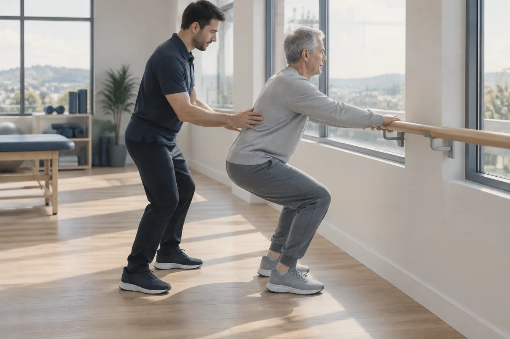
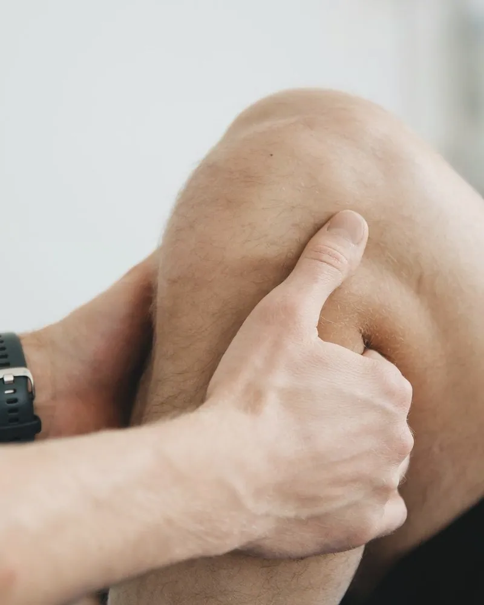
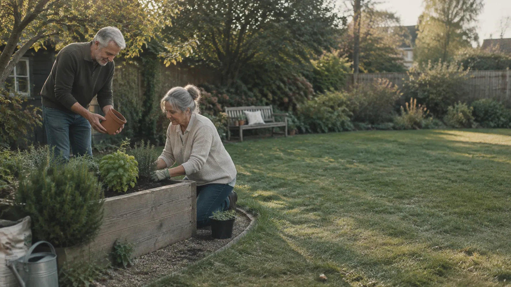

Orthopedics and physical therapy
Where it hurts, and where to start
You don’t need to know the service name. Start with the body area and your situation, or go straight to one of the four routes.
Clinic owner note: This page is the index for every ad and post that names a body part: the link can open the map on that area with ?area=knee.
Where it hurts
Pick an area
Choose the area that is bothering you, then where you are starting from. This is general visit preparation, not an assessment.
Body area
You chose
Knee
Where are you starting from?
A usual first step
Orthopedic consultation
Many people with a new knee concern start with an orthopedic consultation: a conversation and an examination before any plan is agreed.
What people often want back
- Taking the stairs without planning around them
- Kneeling in the garden
- The weekend run or match
The referral question
Some plans want a referral from your primary care clinician before a specialist visit. Check with your plan before you book.
What to bring
- The shoes you walk or train in most
- Any imaging reports, and where the images were taken
- Your medication list
Be ready to describe: What the knee does on stairs, slopes, squats and after sitting.
Other starting points: Orthopedic consultationPhysical therapyInjury visitsSurgical planning
This site can’t assess an injury. It only shows where people usually start. For a medical emergency in the U.S., call 911. For personal health questions, contact a qualified care team.
Four routes
Or go straight to a route
First appointmentOrthopedic consultationA first conversation about pain, movement and what you want to be able to do. 

